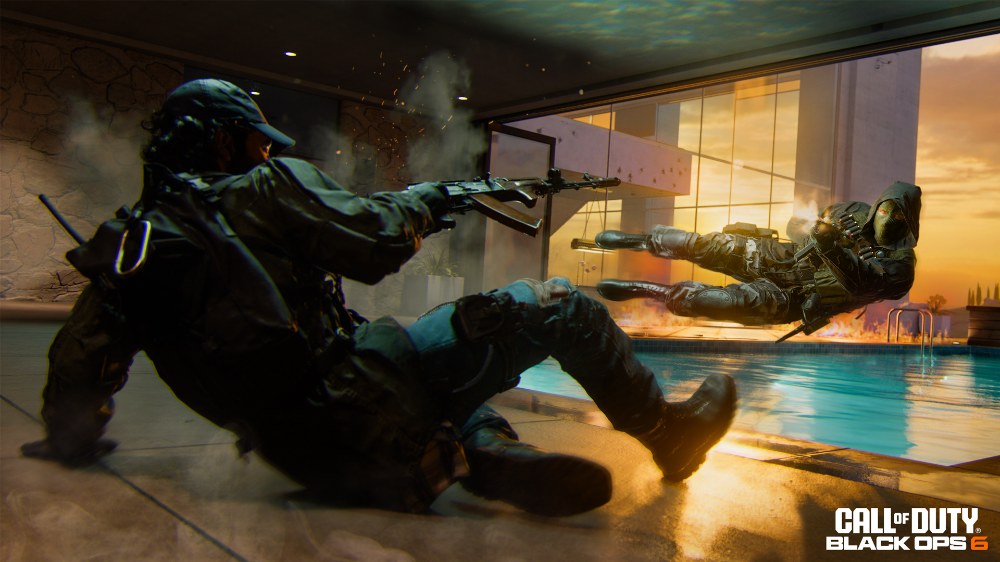
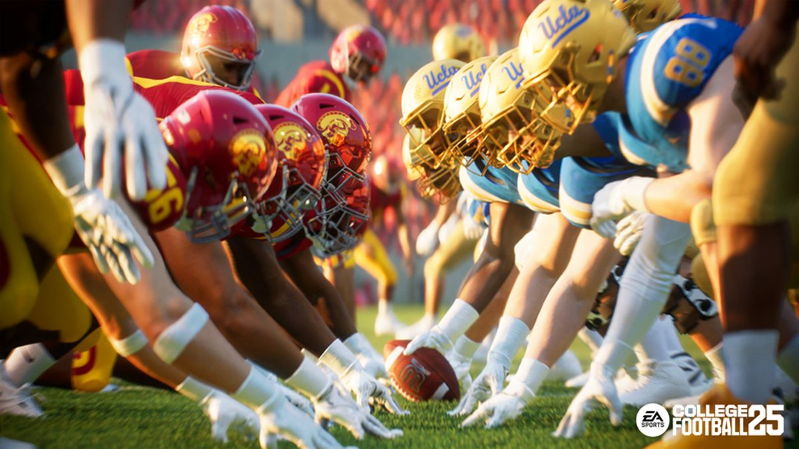

World of Player Vs Player
PvP Games
PvP (Player versus Player) gaming is the ultimate test of skill, strategy, and adaptability, pitting players against real opponents rather than AI-controlled enemies. Unlike PvE (Player versus Environment), where patterns and mechanics can be learned over time, PvP is unpredictable, requiring quick thinking and mastery of game mechanics. This dynamic challenge is what makes PvP gaming so popular across various genres, including first-person shooters like Call of Duty and Valorant, battle royale games like Fortnite and PUBG, MOBAs such as League of Legends and Dota 2, and even fighting games like Tekken and Street Fighter. The constant need to adapt keeps players engaged, as they must continuously refine their skills to stay competitive. Every match presents a new challenge, with different playstyles and strategies to counter. Many players thrive on the excitement of facing unpredictable human opponents, making victories feel more rewarding. The rise of esports has further elevated PvP gaming, with professional tournaments offering players a chance to showcase their talents on a global stage. Whether playing casually or competitively, PvP gaming delivers an ever-evolving experience that keeps players coming back for more.
Just as Competitve as Sports
©Electronic Arts
Enhanced Experience
PvP gaming offers a wide range of competitive experiences, with some of the most popular titles spanning different genres. Call of Duty: Warzone delivers fast-paced battle royale action, while Valorant blends precise gunplay with unique agent abilities for tactical FPS combat. Apex Legends adds fluid movement and character-based skills to the battle royale genre, whereas Fortnite revolutionizes PvP with its signature building mechanics. Counter-Strike: Global Offensive (CS:GO) remains a legendary tactical shooter, emphasizing teamwork and precise aim. For strategy lovers, League of Legends and Dota 2 dominate the MOBA scene, requiring deep game knowledge and coordinated play. MMORPG fans can engage in thrilling PvP battles in World of Warcraft, testing their skills in arenas and battlegrounds. Fighting game enthusiasts enjoy Tekken 8, where combos and mind games determine victory, while Rainbow Six Siege offers intense, tactical FPS action with destructible environments and strategic team play. Each of these games provides a unique competitive experience, ensuring there's something for every PvP fan.